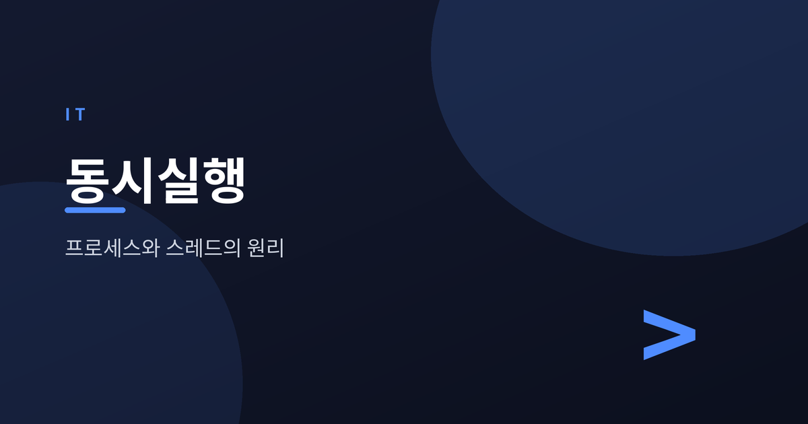
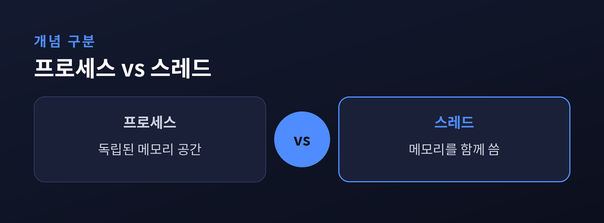
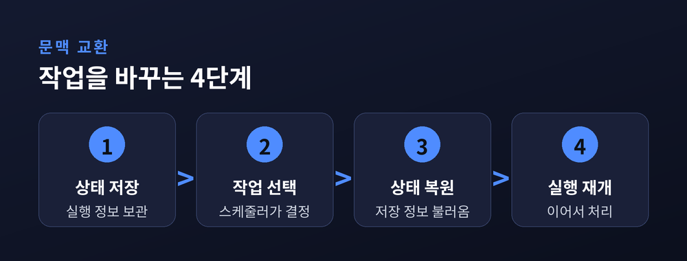
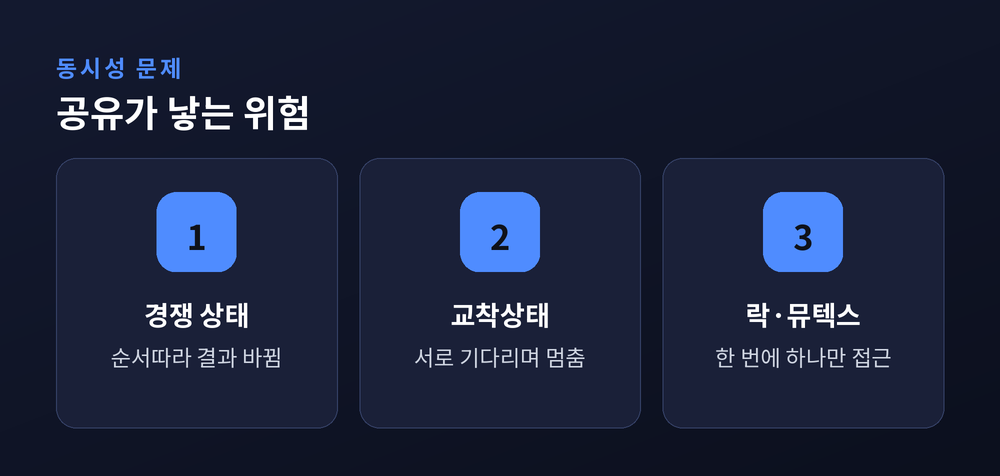
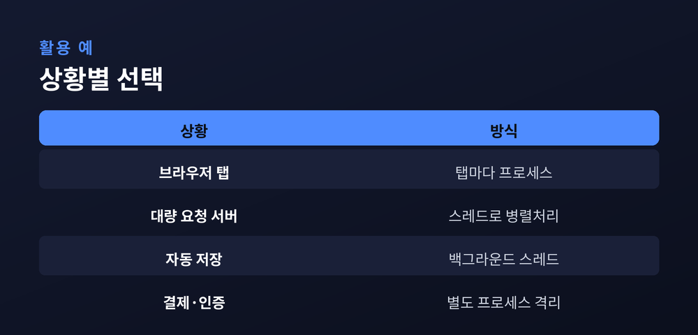

컴퓨터는 어떻게 여러 일을 동시에 하나

컴퓨터 한 대로 음악을 들으면서 문서를 쓰고, 동시에 메신저 알림까지 받는 일은 이제 당연하게 느껴집니다.
CPU 코어 수는 한정되어 있는데, 컴퓨터는 어떻게 이 많은 일을 한꺼번에 처리하는 것처럼 보이게 만드는 것일까요.
그 답의 중심에 프로세스와 스레드라는 두 개념이 있습니다.
이번 글에서는 이 둘이 무엇이 다르고, 운영체제가 이들을 어떻게 번갈아 실행하는지 살펴보겠습니다.
프로그램은 디스크에 저장된 파일일 뿐입니다.
이 파일을 실행하면 운영체제가 메모리에 올려 프로세스를 만듭니다.
프로세스는 실행 중인 프로그램 하나를 가리킵니다.
코드, 데이터, 힙, 스택까지 독립된 메모리 공간을 통째로 가집니다.
운영체제는 이 공간을 다른 프로세스와 철저히 분리합니다.
한 프로세스가 오류를 일으켜도 다른 프로세스는 대체로 영향을 받지 않습니다.
스레드는 이야기가 조금 다릅니다.
스레드는 프로세스 안에서 실제로 명령을 하나씩 실행해 나가는 흐름입니다.
하나의 프로세스는 여러 개의 스레드를 둘 수 있습니다.
이를 멀티스레드라 부릅니다.
같은 프로세스에 속한 스레드끼리는 코드와 데이터, 힙을 함께 씁니다.
다만 스택만은 스레드마다 따로 가집니다.
프로세스를 독립된 건물이라 하면, 스레드는 그 건물 안에서 함께 일하는 직원들에 가깝습니다.
건물은 서로 벽으로 막혀 있지만, 같은 건물 안 직원들은 같은 사무실과 자료를 공유합니다.
운영체제는 각 프로세스마다 정보를 담은 표를 하나씩 관리합니다.
이 표를 흔히 프로세스 제어 블록이라 부릅니다.
프로세스 번호, 상태, 메모리 위치 같은 정보가 여기 담깁니다.
스레드를 새로 여는 비용은 프로세스를 새로 여는 비용보다 훨씬 적습니다.
메모리 공간을 새로 마련할 필요가 없기 때문입니다.
그래서 짧고 가벼운 작업을 여러 개 처리할 때는 스레드가 자주 선택됩니다.

실행해야 할 작업은 많은데, CPU 코어 수는 적습니다.
그래서 운영체제는 아주 짧은 시간 단위로 작업을 번갈아 실행합니다.
이 시간 단위를 흔히 타임 슬라이스라 부릅니다.
사람의 눈에는 여러 작업이 동시에 도는 것처럼 보입니다.
실제로는 한 코어가 이 작업 저 작업을 빠르게 오가는 경우가 많습니다.
물론 코어가 여러 개인 멀티코어 CPU라면 일부는 진짜로 동시에 실행됩니다.
이 과정에서 핵심 역할을 하는 것이 스케줄러입니다.
스케줄러는 다음에 어떤 작업을 실행할지 결정하는 운영체제의 일부입니다.
작업을 바꿀 때는 문맥 교환이라는 절차를 거칩니다.
먼저 실행 중이던 작업의 상태를 저장합니다.
레지스터 값과 실행 위치 같은 정보입니다.
이어서 스케줄러가 다음에 실행할 작업을 고릅니다.
그 작업의 저장된 상태를 다시 불러옵니다.
마지막으로 그 지점부터 실행을 재개합니다.
스케줄링 방식에는 여러 갈래가 있습니다.
일정 시간이 지나면 강제로 작업을 바꾸는 방식을 선점형이라 합니다.
지금의 데스크톱과 서버 운영체제는 대개 이 방식을 씁니다.
한 작업이 스스로 순서를 넘겨줄 때까지 기다리는 방식도 있는데, 비선점형이라 부릅니다.
선점형은 반응성이 좋지만 문맥 교환이 잦아질 수 있습니다.
문맥 교환은 공짜가 아닙니다.
상태를 저장하고 불러오는 데도 시간이 듭니다.
작업 전환이 지나치게 잦으면 오히려 전체 속도가 떨어질 수 있습니다.

스레드는 가볍고 편리하지만 공짜로 얻는 것은 아닙니다.
같은 프로세스의 스레드들은 메모리를 함께 쓰기 때문입니다.
여러 스레드가 같은 데이터를 동시에 건드리면 문제가 생깁니다.
대표적인 것이 경쟁 상태입니다.
두 스레드가 같은 값을 동시에 고치려 하면, 실행 순서에 따라 결과가 달라집니다.
어제는 맞던 계산이 오늘은 틀리는 일도 이 때문에 생깁니다.
교착상태도 자주 언급되는 문제입니다.
한 스레드는 상대가 가진 자원을 기다리고, 상대도 이쪽이 가진 자원을 기다립니다.
서로 양보하지 않으면 두 스레드 모두 영원히 멈춰 있게 됩니다.
여러 스레드가 자유롭게 뛰놀수록, 자원을 지키는 규칙은 더 촘촘해야 합니다.
이런 문제를 막기 위해 락이나 뮤텍스 같은 동기화 도구를 씁니다.
한 번에 하나의 스레드만 특정 자원에 접근하도록 제한하는 장치입니다.
다만 동기화 도구를 지나치게 많이 걸면 병렬로 일할 수 있는 여지가 줄어듭니다.
코드의 복잡도도 함께 늘어납니다.
락을 잘못된 순서로 걸면 오히려 교착상태를 만들기도 합니다.
한 스레드만 계속 자원을 못 얻는 기아 상태도 종종 언급되는 문제입니다.
결국 안전과 성능 사이에서 적절한 지점을 찾는 일이 됩니다.

두 개념 모두 나름의 쓸모가 있습니다.
선택 기준은 대개 격리와 효율 사이의 저울질입니다.
웹 브라우저는 탭마다 별도 프로세스를 씁니다.
한 탭이 멈추거나 죽어도 다른 탭은 대체로 무사합니다.
반대로 요청을 대량으로 처리하는 서버는 스레드를 즐겨 씁니다.
프로세스를 매번 새로 만드는 것보다 자원을 아낄 수 있기 때문입니다.
문서 편집기의 자동 저장 기능도 스레드로 처리하는 경우가 많습니다.
사용자가 입력하는 동안 뒤에서 조용히 저장 작업을 함께 진행합니다.
반면 결제나 인증처럼 안전이 특히 중요한 모듈은 별도 프로세스로 격리하기도 합니다.
문제가 생겨도 다른 부분까지 함께 무너지지 않게 하려는 선택입니다.
스레드를 매번 새로 만들고 없애는 비용이 부담스러울 때는 스레드 풀이라는 방법도 씁니다.
미리 만들어 둔 스레드 여러 개를 필요할 때마다 꺼내 쓰는 방식입니다.
| 상황 | 흔히 쓰는 방식 |
|---|---|
| 웹 브라우저 탭 | 탭마다 프로세스, 강한 격리 |
| 대량 요청 서버 | 스레드로 병렬 처리, 자원 절약 |
| 편집기 자동 저장 | 백그라운드 스레드 |
| 결제·인증 모듈 | 별도 프로세스로 격리 |
정답은 하나로 정해져 있지 않습니다.
무엇을 지키고 무엇을 아낄지에 따라 선택이 달라질 뿐입니다.
실제 소프트웨어 대부분은 이 두 방식을 상황에 맞게 섞어서 씁니다.

정리하면 이렇습니다.
프로세스는 격리된 안전한 상자이고, 스레드는 그 안에서 가볍게 움직이는 일꾼입니다.
무엇을 고를지는 결국 "안전"과 "효율" 사이의 저울질입니다.
화면 위 창들이 매끄럽게 넘나드는 그 순간에도, 컴퓨터 내부에서는 아주 짧은 시간을 촘촘히 쪼개 쓰는 계산이 쉼 없이 이어지고 있습니다.